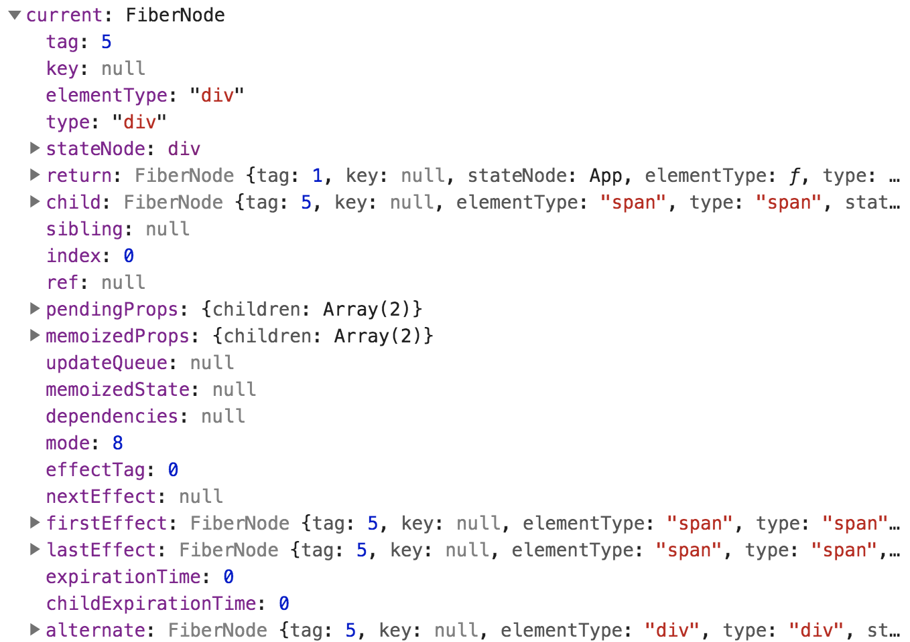

学过微机的同学都应该很熟悉 「中断」 这个概念：
CPU 正常运行程序时，内部事件或外设提出中断请求；
CPU 予以响应，同时保护好 CPU 执行主程序的现场，转入调用中断服务程序；
调用完毕后恢复现场。
本文学习的 React 源码版本：16.9.0
为什么需要 Fiber Stack Reconciler React 16 之前的组件渲染方式是递归渲染：渲染父节点 -> 渲染子节点
递归渲染看起来十分简单，但是如果想在子节点的渲染过程中执行优先级更高的操作，只能保留调用栈中子节点的渲染及子节点之前节点的渲染，这样是很复杂的，这种调和/渲染也叫做 Stack Reconciler。
Fiber Reconciler Fiber 使用链表的结构去渲染节点，每一个节点都称之为 Fiber Node，每个节点会有三个属性：
child 指向第一个子节点
sibling 指向兄弟节点
return 指向父节点
Fiber 的渲染方式：从父节点开始，向下依次遍历子节点，深度优先渲染完子节点后，再回到其父节点去检查是否有兄弟节点，如果有兄弟节点，则从该兄弟节点开始继续深度优先的渲染，直到回退到根节点结束。
重复遍历的节点并不会重复渲染，而是为了取到下一个可能需要渲染的节点。
此时每一个节点都是一个渲染任务, 从而将整个界面渲染任务拆分成更小的模块，渲染可拆分就意味着每次任务执行前都可以检查是否去执行优先级更高的操作。这个就叫做并行渲染或者时间分片。
Fiber Node Tree 实际的渲染过程是 diff 两棵 Fiber 节点树得到最小变更。在 React16 中，两棵树分别是：
current tree （在源码中即 HostRoot.current）
workInProgress tree（在源码中即 HostRoot.current.alternate）

不过 React 并没有实现两棵 Fiber Node Tree，实际情况是两棵树上对应的 Fiber Node 通过 alternate 属性互相引用。
1 2 3 4 5 6 7 8 9 export function createWorkInProgress ( workInProgress.pendingProps = pendingProps; workInProgress.child = current.child; workInProgress.sibling = current.sibling; }
React 渲染流程 可以分为 Scheduler、Reconciliation、Commit 这三个阶段
1 2 3 4 graph LR A[Scheduler] -->B(Reconciliation/Render) B --> C(Commit) C --> D(Brower Screen)
Scheduler 阶段 Scheduer 流程主要是创建更新，创建更新的方式：
可以发现 React 将首次渲染和更新渲染统一了起来。
ReactDOM.render 调用 legacyRenderSubtreeIntoContainer
1 2 3 4 5 6 7 8 9 10 11 12 13 const ReactDOM = { render ( return legacyRenderSubtreeIntoContainer( null , element, container, false , callback ); } };
legacyRenderSubtreeIntoContainer 调用 root.render，root 来自调用 legacyCreateRootFromDOMContainer。
1 2 3 4 5 6 7 8 9 10 11 12 13 14 function legacyRenderSubtreeIntoContainer ( let root: _ReactSyncRoot = (container._reactRootContainer: any); if (!root) { root = container._reactRootContainer = legacyCreateRootFromDOMContainer( container, forceHydrate ); } else { updateContainer(children, fiberRoot, parentComponent, callback); } }
legacyCreateRootFromDOMContainer
清除根节点下的所有子元素
创建 ReactRoot
1 2 3 4 5 6 7 8 9 10 11 12 13 function legacyCreateRootFromDOMContainer ( const shouldHydrate = forceHydrate || shouldHydrateDueToLegacyHeuristic(container); if (!shouldHydrate) { let rootSibling; while ((rootSibling = container.lastChild)) { container.removeChild(rootSibling); } } return new ReactSyncRoot(container, LegacyRoot, shouldHydrate); }
ReactSyncRoot 后面就是创建 FiberRoot 了，不放源码上来了。
setState 1 2 3 4 5 graph LR A[createFiberRoot] A[setState] -->B(enqueueUpdate) B --> |updateQueue| C(scheduleWork) C --> D(requestWork)
enqueueUpdate 将当前的更新压入更新队列
1 2 3 4 5 6 7 8 9 10 11 12 13 14 15 16 17 18 19 20 21 22 23 24 25 26 27 const updater = { enqueueUpdate (inst, payload, callback ) const fiber = getInstance(inst); const currentTime = requestCurrentTime(); const suspenseConfig = requestCurrentSuspenseConfig(); const expirationTime = computeExpirationForFiber( currentTime, fiber, suspenseConfig ); const update = createUpdate(expirationTime, suspenseConfig); update.payload = payload; if (callback !== undefined && callback !== null ) { if (__DEV__) { warnOnInvalidCallback(callback, 'setState' ); } update.callback = callback; } enqueueUpdate(fiber, update); scheduleWork(fiber, expirationTime); } };
scheduleWork 1 2 3 4 function scheduleUpdateOnFiber ( }
scheduler 的具体过程会在之后的并行渲染中展开。
Reconciliation 阶段 workLoop 循环更新，对整棵 Fiber 树都遍历一遍。
循环每渲染完成一个 Fiber Node 就利用 shouldYield 来判断是否有优先级更高的任务存在，是则跳出循环先执行优先级更高的任务，否则继续渲染下一个 Fiber Node。
还记得文章一开始介绍了微机中的中断概念么，可以看到在 workLoop 过程中体现出来了。
简单来说就是判断当前帧是否还有时间更新，如果没有时间更新就将剩余时间去进行其他操作。
1 2 3 4 5 6 7 8 9 10 11 12 13 14 15 16 17 18 19 function renderRoot ( do { try { if (isSync) { workLoopSync(); } else { workLoop(); } break ; } } function workLoop ( while (workInProgress !== null && !shouldYield()) { workInProgress = performUnitOfWork(workInProgress); } }
调用 beginWork 更新当前任务节点，如果 Fiber 树已经更新到叶子节点，则调用 completeUnitOfWork 更新。
1 2 3 4 5 6 7 8 9 10 11 12 13 14 15 function performUnitOfWork (unitOfWork: Fiber ): Fiber | null const current = unitOfWork.alternate; next = beginWork(current, unitOfWork, renderExpirationTime); unitOfWork.memoizedProps = unitOfWork.pendingProps; if (next === null ) { next = completeUnitOfWork(unitOfWork); } return next; }
beginWork 根据 workInProgress 的 tag ，把对应的 FiberNode 上下文压入栈，然后更新节点，对应 render 阶段。
1 2 3 4 5 6 7 8 9 10 11 12 13 function beginWork ( ... switch (workInProgress.tag) { case ClassComponent: { const Component = workInProgress.type; if (isLegacyContextProvider(Component)) { pushLegacyContextProvider(workInProgress); } break ; } } }
beginWork 会返回当前节点的子节点，如果有子节点，继续 workLoop；如果没有子节点，进入 completeUnitOfWork
子节点的 alternate 改变是在 cloneChildFibers 函数中
completeWork 改变 effectList（firstEffect、lastEffect、nextEffect）
作用是将 Fiber Node 上下文出栈，对应 commit 阶段
1 2 3 4 5 6 7 8 9 10 11 12 13 14 function completeWork ( const newProps = workInProgress.pendingProps; switch (workInProgress.tag) { case ClassComponent: { const Component = workInProgress.type; if (isLegacyContextProvider(Component)) { popLegacyContext(workInProgress); } break ; } } }
commit 阶段 从字面意思来就可以知道， commit 阶段是将调和阶段的更新进行提交，即把更新操作反映到真实的 DOM 上。
同时，commit 阶段是同步执行，不可被中断。
Effect 函数式编程中经常会看见 Effect 这个概念，表示副作用。在 Fiber 架构中，Effect 定义了 Fiber Node 在 commit 阶段要做的事情，在源码中也就是 EffectTag 这个属性。
对于组件：更新 refs、调用 componentDidUpdate…
对于 DOM：增加、更新、删除 DOM…
effects list Effect 组成的链表成为 effects list
firstEffect：指向第一个更新的节点
nextEffect：指向下一个更新的节点
effects list 是用来进行最后的真实 DOM 更新的，这不难让人想到 diff 算法，实际上 effects list 正是 diff 得到的结果。
diff 1 2 function reconcileChildFibers (
commitRoot 使 effects list 生效：
第一次遍历 effects list（commitBeforeMutationEffects）：在更改前读取 DOM 上的 state，这里是 getSnapshotBeforeUpdate 生命周期调用的地方；
第二次遍历 effects list（commitMutationEffects）：此阶段是真正更改 DOM 的阶段；
第三次遍历 effects list（commitLayoutEffects）：执行生命周期函数 componentDidMount、componentDidUpdate…
1 2 3 4 5 6 7 8 9 10 11 12 13 14 function commitRootImpl ( do { commitBeforeMutationEffects(); } while (nextEffect !== null ); do { commitMutationEffects(renderPriorityLevel); } while (nextEffect !== null ); do { commitLayoutEffects(root, expirationTime); } while (nextEffect !== null ); }
commitBeforeMutationEffects
通过 prevProps、prevState 以获取 Snapshot；
调用组件实例的 getSnapshotBeforeUpdate，返回值用于 componentDidUpdate 的第三个参数。
1 2 3 4 5 6 7 8 9 10 11 12 13 14 15 16 17 18 19 20 21 function commitBeforeMutationLifeCycles ( switch (finishedWork.tag) { case ClassComponent: { if (current !== null ) { const prevProps = current.memoizedProps; const prevState = current.memoizedState; startPhaseTimer(finishedWork, 'getSnapshotBeforeUpdate' ); const snapshot = instance.getSnapshotBeforeUpdate( finishedWork.elementType === finishedWork.type ? prevProps : resolveDefaultProps(finishedWork.type, prevProps), prevState ); } } } }
commitMutationEffects 根据不同的 effectTag 执行不同的操作：
插入节点：commitPlacement
更新节点：commitWork
删除节点：commitDeletion
1 2 3 4 5 6 7 8 9 10 11 12 13 14 15 16 17 18 19 20 21 22 23 24 25 26 function commitMutationEffects ( switch (primaryEffectTag) { case Placement: { commitPlacement(nextEffect); break ; } case PlacementAndUpdate: { commitPlacement(nextEffect); const current = nextEffect.alternate; commitWork(current, nextEffect); break ; } case Update: { const current = nextEffect.alternate; commitWork(current, nextEffect); break ; } case Deletion: { commitDeletion(nextEffect, renderPriorityLevel); break ; } } }
commitPlacement – 插入节点
找到 finishedWork 的父节点 parentFiber。寻找的是原生的 DOM 节点对应的 Fiber Node，如果父级不是原生 DOM，则继续往上寻找。
找到待插入节点的后一个节点
使用 insertBefore 或 appendChild 或深度优先遍历 class 组件的子节点插入
1 2 3 4 5 6 7 8 9 10 11 12 13 14 15 16 17 18 function commitPlacement const parentFiber = getHostParentFiber(finishedWork); const before = getHostSibling(finishedWork); insertBefore(parent, stateNode, before); appendChild(parent, stateNode); while (node.sibling === null ) { if (node.return === null || node.return === finishedWork) { return ; } node = node.return; } }
commitWork – 更新节点 commitWork 只会对 HostComponent 和 HostText 进行更新，也就是 DOM 节点和文本节点。
HostComponent 调用 commitUpdate
HostText 调用 commitTextUpdate
1 2 3 4 5 6 7 8 9 10 11 12 13 14 15 16 17 18 function commitWork ( switch (finishedWork.tag) { case HostComponent: { commitUpdate( instance, updatePayload, type, oldProps, newProps, finishedWork ); } case HostText: { commitTextUpdate(textInstance, oldText, newText); } } }
commitUpdate updatePayload 应用到真实 DOM 上；对一些属性做特殊处理
1 2 3 4 5 6 7 8 9 10 11 12 13 14 15 16 17 18 19 20 21 22 23 24 25 26 27 28 function commitUpdate ( updateFiberProps(domElement, newProps); updateProperties(domElement, updatePayload, type, oldProps, newProps); } function updateDOMProperties ( domElement: Element, updatePayload: Array <any>, wasCustomComponentTag: boolean, isCustomComponentTag: boolean void for (let i = 0 ; i < updatePayload.length; i += 2 ) { const propKey = updatePayload[i]; const propValue = updatePayload[i + 1 ]; if (propKey === STYLE) { setValueForStyles(domElement, propValue); } else if (propKey === DANGEROUSLY_SET_INNER_HTML) { setInnerHTML(domElement, propValue); } else if (propKey === CHILDREN) { setTextContent(domElement, propValue); } else { setValueForProperty(domElement, propKey, propValue, isCustomComponentTag); } } }
commitTextUpdate 文本更新很简单，直接替换 value
1 2 3 4 function commitTextUpdate ( textInstance.nodeValue = newText; }
commitDeletion – 删除节点 删除节点也需要考虑到子节点不一定是原生 DOM 的情况，比如如果是 class Component，需要调用 componentWillUnmount，所以还是需要深度遍历整个子树
1 2 3 4 5 6 7 8 9 10 11 12 13 14 function commitDeletion ( current: Fiber, renderPriorityLevel: ReactPriorityLevel void if (supportsMutation) { unmountHostComponents(current, renderPriorityLevel); } else { commitNestedUnmounts(current, renderPriorityLevel); } detachFiber(current); }
commitLayoutEffects
执行 componentDidMount、componentDidUpdate
1 2 3 4 5 6 7 8 9 10 11 12 13 14 15 16 17 18 19 20 21 22 23 24 25 26 27 28 29 30 31 function commitLayoutEffects ( while (nextEffect !== null ) { if (effectTag & (Update | Callback)) { recordEffect(); const current = nextEffect.alternate; commitLifeCycles(root, current, nextEffect, committedExpirationTime); } } } function commitLifeCycles ( switch (finishedWork.tag) { case ClassComponent: { const instance = finishedWork.stateNode; if (finishedWork.effectTag & Update) { if (current === null ) { startPhaseTimer(finishedWork, 'componentDidMount' ); } else { const prevProps = finishedWork.elementType === finishedWork.type ? current.memoizedProps : resolveDefaultProps(finishedWork.type, current.memoizedProps); const prevState = current.memoizedState; startPhaseTimer(finishedWork, 'componentDidUpdate' ); } } } } }
参考